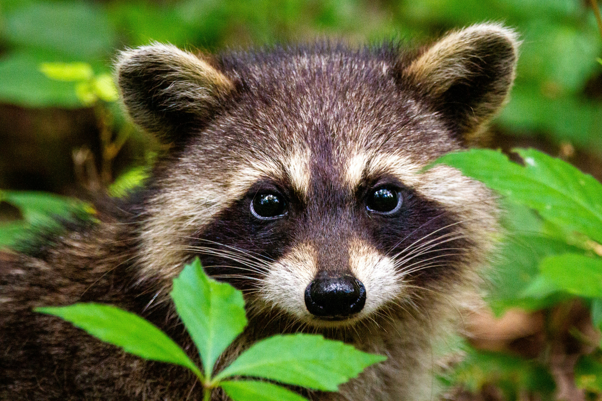

Portfolio of Jack Wilhelm

About Me
My name is Jack Wilhelm and I am a Computer Science: Game Design student with ADHD and a love for raccoons.
Where I'm from: Oakland
Favortie game: Baldur's Gate 3
Favorite movies: The Iron Giant and Christine
Links to Experiments
Fun Facts!
- I'm an Eagle Scout
- I have 2 dogs
- I've taken part in St. Baldricks for 11 years